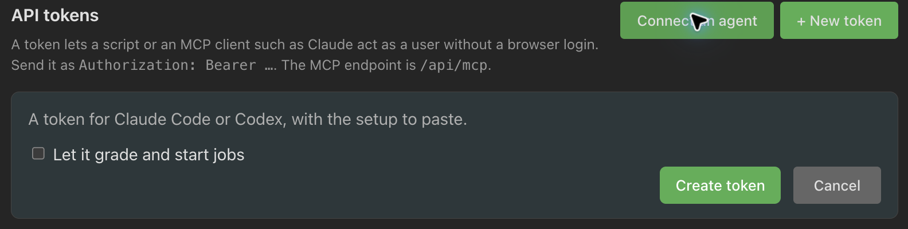
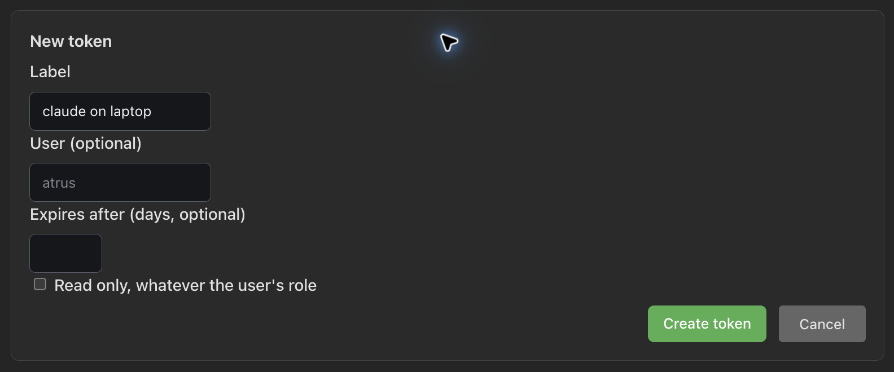
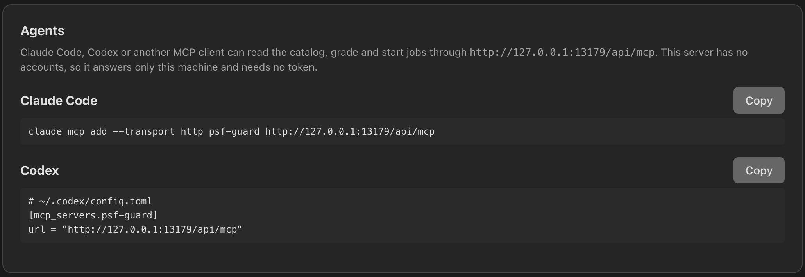

MCP for Agents
A running PSF Guard server is also a Model Context Protocol
(MCP) server at /api/mcp, on the same port as the UI. An agent
such as Claude Code or Codex can read catalogs, grades and quality evidence,
look into stacks, calibration and flats, read and change plans, grade frames,
start imports, quality scans, stacks and WBPP runs, and back up the server.
It meets the same login and permission checks as a person.
Connect an agent
On a server with user accounts, open Settings → Users → API tokens and click Connect an agent. Tick Let it grade and start jobs if the agent should write; otherwise its token only reads. Click Create token. PSF Guard makes a token of your own and shows what to paste into Claude Code and into Codex, with this server's URL. Copy the token then: it is shown once.

+ New token does the same with a Label, an expiry or another user of your choosing, and Read only, whatever the user's role for a token that only reads.

The CLI makes tokens too and prints each once. Restart the server after a CLI change:
psf-guard users token create editor --label "claude on laptop" --expires-days 90
psf-guard users token list
psf-guard users token revoke <id>A token acts as its user and never gets more than that user has. A viewer's token reads; an editor's token can also grade and start jobs, unless it was made read only. An editor sees every token and can make one for another user. A token cannot mint or revoke tokens, so a leaked token cannot renew itself. Revoking a token stops it at once, and removing a user removes that user's tokens. See Server Accounts.
psf-guard server on your own machine, needs no token. Its
Settings → Agents tab shows the setup to paste. A
network server with no accounts answers 401 here as everywhere else; see
Server Accounts.

The desktop app picks a new port each time it starts unless you fix one.
Agents links to Settings → Server,
where Fixed port keeps the agent's URL across restarts; see
Installation. A CLI server takes
--port or port in its TOML file.
Client setup
Any client that speaks MCP's streamable HTTP transport works: give it the URL and the token as a bearer header. For Claude Code:
claude mcp add --transport http psf-guard https://guard.example/api/mcp \
--header "Authorization: Bearer psfg_…"For Codex, add the server to ~/.codex/config.toml and pass the
token in an environment variable, so it never sits in the file:
[mcp_servers.psf-guard]
url = "https://guard.example/api/mcp"
bearer_token_env_var = "PSF_GUARD_TOKEN"export PSF_GUARD_TOKEN=psfg_…On the desktop app or a local server with no accounts, drop the token:
claude mcp add --transport http psf-guard http://127.0.0.1:3000/api/mcpThe URL must end in /api/mcp. The bare address serves the
app and answers a POST with 405 and a note that gives the endpoint. The
endpoint is stateless and answers in plain JSON, so a reverse proxy needs
nothing extra and there is no session to expire. Revoke the token to cut an
agent off; it stops at its next call.
What an agent may do
Every tool sends its request through the same /api routes
the UI uses, as the caller. The read-only role,
--allow-database-management and each route's own checks limit an
agent exactly as they limit a person: each write needs the same role and
database management as its button in the app. A refused call comes back as a tool
error with the API's message, not a protocol failure, so the agent can
explain it. Where the server sets allow_read_only_compute, a
viewer's token can also build stacks, plate-solve and predict satellites, as
a viewer can in the UI.
The server also gives the agent PSF Guard's ground rules: sequence
analysis and quality context suggest, and nothing changes until
grade_images runs; catalog predictions and header values are not
pixel evidence, and a conclusion should say which it rests on.
Tools
get_jobs
lists every background job, and explain_calibration can keep
only the flats.Catalog tools take a database: the ID or name
list_databases reports. Planning tools take a
plan_id from list_plans or a rig from
list_rigs. Results are the JSON the UI itself reads. When no tool
fits, api_routes lists every route api_get can
read.
Read the catalog
| Tool | Answers |
|---|---|
list_databases | Open catalogs: ID, name, path, image folders |
list_projects | Projects with targets, plans, progress and recent frames |
list_targets | Targets with coordinates, grade counts and last capture |
get_project_scheduler | A project's Target Scheduler settings, targets and exposure plans |
list_images | Lights with grade, filter, exposure and stored metrics. Filter by project, target, grade or filter name, keep only the header keys asked for (metadata_keys), and page with limit and offset. |
get_image | One image: grade, file location, header metadata, metrics |
get_image_quality | Score, issues, and place in the sequence, from stored evidence |
analyze_sequence | Relative scores and suggested rejects for a target, a project, or the database |
get_statistics | Whole-database counts |
get_sky_coverage | Every target's footprint and exposure by filter |
astrobin_csv | The AstroBin acquisition CSV for a project or target |
get_jobs | Every background job of one database: import, quality backfill and scan, WBPP, calibration grading, flat measuring, reading frame sites, and the duplicate check or repair, each with what it waits for |
get_activity | Across databases: stack builds running and queued, refreshes and re-applies waiting, WBPP runs, and, where you may read backups, the backup under way and the last one |
api_routes, api_get | Every route below /api the UI reads, and a read of any of them, as you |
Look into stacks
| Tool | Answers |
|---|---|
list_stacks | A project's latest stack per channel: frames used and left out, exposure, the masters each session applied, and the IDs the other stack tools take |
get_stack | One channel frame by frame: sensor temperature, whether it was used and why, registration shift and rotation, weight, noise; and per night, whether the frames were dithered |
get_stack_image | The stack as an image, as the app shows it or with the background stretched hard (stretch: "background"); crop to part of the frame |
get_stack_calibration | The masters each session applied: the frames each was built from, with their sensor temperatures and nights, and the lights it calibrated |
Read calibration and flats
| Tool | Answers |
|---|---|
get_calibration_report | Calibration frames the library matches to a project's nights; rejected lights stay out unless include_rejected is set |
get_calibration_library | Library totals: frames and masters, and per rig the count of each kind and the oldest and newest capture |
get_calibration_project_scope | What one project's lights use from the library: sessions, masters, rigs, and headers still being read |
list_calibration_sessions, list_calibration_frames | The library a page at a time, narrowed by project, rig, kind, filter, session, flat group, grade, kept out or nights |
get_calibration_frame | One frame: grade, findings, and measurements beside its session's; for a flat, its spots and large dust, its session's dust, and which of that dust it shows |
explain_calibration | Why one light got or missed each master: every library frame for its camera by night, used, passed over, refused with the reason, or taken though suspect; what each master would span; for flats, the family, how it was chosen and the side of a change. kinds: ["flat"] keeps only the flats. |
check_uncalibrated_lights | A project's lights the library cannot calibrate properly, by night, filter and reason, with a digest |
get_flat_groups | Each rig's flat groups by family and night, the splits between them and why, the dust each split shows, a person's split or join and whether the measurements agree, and the rig's change events |
get_flat_group_use | What each flat group feeds: its flat masters, and the lights that take it by project |
get_light_flat_options | The changes some lights were shot during, with each change's key and the sides already chosen. Needs write access, as in the app. |
get_calibration_duplicates | The duplicate check or repair, and its plan a page at a time, with the plan's token |
Read Planning
| Tool | Answers |
|---|---|
list_plans | Every plan with its target, rigs, goals and state |
get_plan | One plan: framing, rigs, and each rig's exposures per band |
get_plan_progress | Frames per rig and objective against the goals |
get_framing | The framing: centre, rotation, mosaic panels and the rig each uses |
get_activation | What was last written to the rigs, and whether the plan changed since |
list_rigs | Rig profiles and their last reported status |
get_rig_preferences | A rig's current observing preferences, and where each value comes from |
get_rig_scheduling | The Target Scheduler limits a rig would write to each project, and which differ now |
list_templates | The exposure template library, or a rig catalog's own templates |
search_sky | Find a target by name or designation |
Change things
These need a token that may write, unless marked read. The
ones marked management also need a server started with
--allow-database-management, as their buttons in the app
do.
| Tool | Does | Needs |
|---|---|---|
grade_images | Set accepted, rejected or pending with a reason; returns the grades it replaced | write |
start_quality_backfill | Start the background quality scan | write |
start_import | Scan the configured folders for new lights and calibration frames | write |
start_stack, cancel_stack | Build stack previews for a project, target or filter; stop one | write |
start_wbpp_run, cancel_wbpp_run | Run PixInsight WBPP on a project's or target's accepted lights; stop the run | write |
update_project, update_target | Change Target Scheduler settings, sending only the fields to change | write |
update_exposure_plan, create_exposure_plan | Change or add an exposure plan | write |
solve_astrometry, predict_satellites | Plate-solve a light; predict satellite crossings and check them in the pixels | write |
reject_uncalibrated_lights | Reject the lights check_uncalibrated_lights listed, with its digest, so Target Scheduler shoots them again | write |
set_calibration_validity | Mark calibration frames for later or earlier lights, or clear the mark | write |
set_calibration_frame_choice | Use anyway, keep out, or clear the choice on calibration frames; masters already built stay as they are | write |
set_flat_group_override | Split a flat family's groups at a session, join two neighbouring groups, or reset the choice | management |
set_light_flat_choice | Put lights before or after a change, give them one group's flats, or reset their choices | management |
pause_job, resume_job | Pause or resume a database's quality analysis, preview pre-generation, flat measuring or frame-site reading. A pause keeps completed work and lasts until Resume or a server restart. Quality scans you request still run. | write |
check_calibration_duplicates | Check the library for exposures recorded more than once; writes nothing | read |
repair_calibration_duplicates | Merge them, with the token of a check; applies nothing if the library changed since | management |
cancel_calibration_duplicates | Stop the check or repair; a repair rolls back whole | write |
preview_reject_removal | The rejects removal would take out, with a digest | write |
apply_reject_removal, restore_removed_rejects | Remove those rejects to the trash; bring a batch back | write |
preview_sync, apply_sync | Preview a pull or push between two open databases; apply it | write |
create_plan, rename_plan | Start a plan, or rename one | write |
save_plan, save_framing | Save the whole plan or framing, changed, at the revision you read | write |
take_plan_from_target_scheduler | Take a plan's values from a rig's Target Scheduler database | write |
check_feasibility | When the target is observable from each rig's site over the coming nights | write |
preview_activation | Exactly what activating a plan would write to each rig, with a preview_digest | write |
save_template, delete_template | Change the exposure template library | write |
save_preferences | Save observing preferences for all rigs, a site or a rig | write |
apply_activation | Write that preview to the rigs; refuses if anything changed since | management |
push_activation | Send an activated plan to rigs on other machines | management |
apply_rig_scheduling | Write a rig's scheduling limits, with the digest get_rig_scheduling gave | management |
get_backups | The backup schedule, the archives without download paths, the run under way and the last one | management |
start_backup, cancel_backup | Back up now, never with secrets; stop the run | management |
Jobs return at once. The agent polls get_jobs for one
database's jobs, get_activity for stack builds, WBPP runs and
backups across databases, or list_stacks for a stack.
Change a plan
An agent changes a plan as the app does. It reads the plan
(get_plan) or its framing (get_framing), changes the
object, and saves it whole with save_plan or
save_framing. A save made since it read refuses, so it reads
again and redoes the change. Saving changes nothing on a rig. To put a plan
on the rigs, preview_activation shows what each rig's Target
Scheduler database would get; apply_activation writes it only if
nothing changed since that preview. See
Exposures & Activation.
Look into a stack
Ask where a pattern in a stack comes from. get_stack_image with
stretch: "background" shows it, and a crop shows it at full detail.
get_stack_calibration shows whether a session had no flat, or a dark
master built from two frames, and the temperatures those frames were shot at;
get_stack provides each light's temperature for comparison.
explain_calibration explains why a light cannot be calibrated: flats
marked for later lights, flats at another rotator angle, darks of another exposure, or
darks shot warmer than the light. get_stack also shows, per night,
whether the frames were dithered: frames that walk one way without dithers turn
anything fixed to the sensor into streaks. See Calibration
Libraries.
Flats and their changes
Ask why some lights got last month's flats. explain_calibration with
kinds: ["flat"] lists the family, the change the light sits beside and
the side its flats came from. get_flat_groups shows the rig's groups and
why each split: dust, light pattern or vignetting against the limits, with the dust
counted by kind (new, gone, moved) and shape (compact, disk, donut, patch) and the
deepest three named. Dust that moved only as far as focus travel explains is counted
apart and does not split groups. get_calibration_frame shows one flat's
own dust beside its session's.
Changing flat assignments manually requires write access and database management,
as in the app. set_flat_group_override splits or joins groups by the
sessions' response_key; set_light_flat_choice puts lights on
a side of a change by its key, which get_light_flat_options
lists for a set of lights. Use anyway on a suspect frame
(set_calibration_frame_choice) needs write access only.
A duplicate repair needs a check first.
check_calibration_duplicates starts it;
get_calibration_duplicates shows the plan and its
token; repair_calibration_duplicates takes that
token, merges the rows, and has the masters built from them built again. No
file is moved or deleted. See Calibration
Libraries.
Backups
get_backups, start_backup and
cancel_backup need write access and database management, as
Settings › Backups does. An agent never handles
secrets: start_backup refuses them whoever signs in, and writes
only to the download area or the folder the schedule already uses, never a
folder of the agent's choosing. It copies the server's settings and stores
(meta) unless the agent asks for full, which adds
every catalog. Archives are listed without download paths, and
api_get reads no backups route, so an agent never hands an
archive out. A person downloads an archive, or makes one with secrets, in
Settings. No tool restores.
Try it without a client
TOKEN=psfg_…
curl -s https://guard.example/api/mcp \
-H "Authorization: Bearer $TOKEN" \
-H "Content-Type: application/json" \
-H "Accept: application/json, text/event-stream" \
-d '{"jsonrpc":"2.0","id":1,"method":"tools/call",
"params":{"name":"list_databases","arguments":{}}}'Notes for operators
- The endpoint sits inside the API router, so the login, the read-only role and the database-management gate apply as they do to the UI.
- Tokens live in
auth.jsonbeside the registry as SHA-256 hashes. Tokens made in Settings work at once; a CLI change needs a restart. - The same token works for the REST API. See Configuration & API.